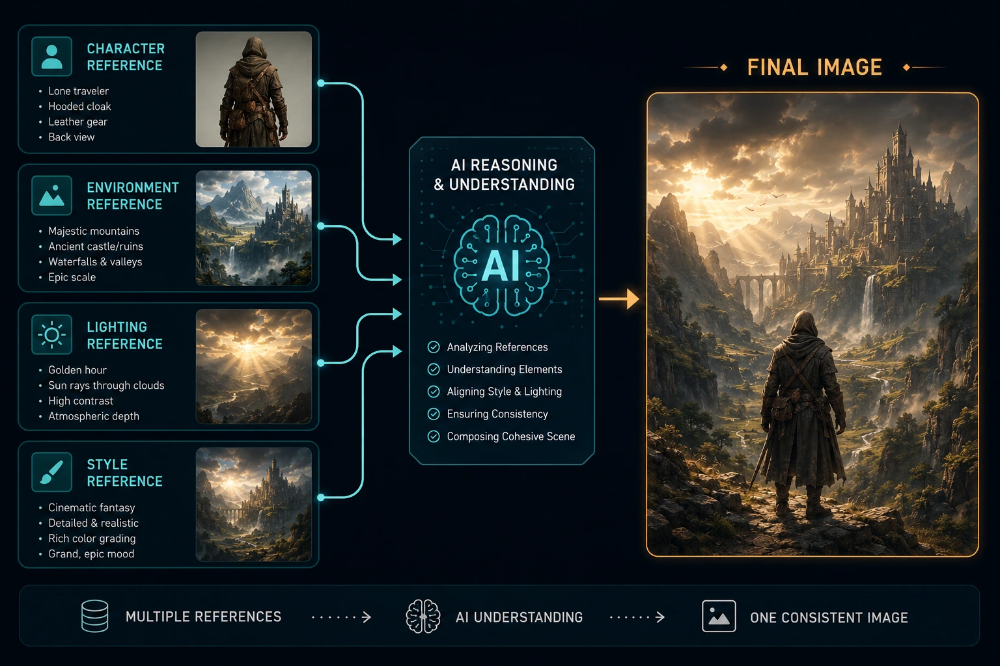

The Short Version
AI image generation has reached a point where raw image quality isn't the biggest differentiator anymore. Most of the leading models can create beautiful pictures. What separates them is how well they understand what you're actually trying to make.
That's where Seedream 5.0 caught my attention.
Rather than focusing only on prettier images, Seedream 5.0 aims to better understand complex prompts, multiple references, and editing requests. For artists, designers, filmmakers, and content creators, that's potentially a much bigger improvement than simply adding more detail.
What's New
Seedream 5.0 introduces a stronger emphasis on reasoning before generation. Instead of immediately converting text into pixels, the model attempts to better interpret relationships, scene composition, and intent before creating the image.
That sounds subtle, but it's one of the biggest frustrations many creators have with AI art today.
You don't want to spend fifteen prompt revisions explaining that the knight should be behind the tree instead of in front of it.
You just want the model to understand.
Seedream also improves multi-reference workflows, allowing creators to combine several source images while maintaining much stronger consistency between them.
For anyone building characters, environments, or branded artwork, that's a welcome improvement.
Why It Matters
As someone who spends a lot of time creating cinematic imagery, I've found that the bottleneck usually isn't image quality anymore.
It's consistency.
When you're building an entire project—whether it's concept art, a YouTube series, or something like The Orb—every image needs to feel like it belongs in the same world.
Small differences in lighting, clothing, facial proportions, or composition become surprisingly noticeable once dozens of images are placed side by side.
That's why better reference understanding is such an important step forward.

Better Prompting Instead of Longer Prompting
One thing I hope models continue improving is reducing the need for enormous prompts.
Many creators now write prompts hundreds of words long because current models sometimes miss simple relationships.
A smarter model should require fewer words—not more.
Instead of writing a miniature screenplay for every image, creators should be able to describe their goal naturally and spend more time refining ideas instead of debugging prompts.
That's ultimately where AI image generation becomes a true creative tool rather than another piece of software to wrestle with.
Where It Fits Into My Workflow
If I were starting a new cinematic project today, I'd likely use multiple AI tools together rather than relying on a single model.
Each has strengths.
Some excel at artistic exploration.
Others produce stronger realism.
Some are excellent at editing existing artwork.
The interesting question isn't whether Seedream replaces everything else.
It's whether it becomes the model you reach for first when consistency and prompt understanding matter most.
As AI tools mature, workflows are becoming more modular.
Instead of searching for one perfect application, creators are assembling pipelines that play to each model's strengths.
That approach tends to produce better results than expecting one tool to do everything perfectly.
Final Thoughts
Seedream 5.0 represents an encouraging direction for AI image generation.
Rather than simply chasing prettier benchmark images, it focuses on solving real workflow problems that artists encounter every day.
If these improvements continue, prompt writing may gradually become less about finding magic words and more about describing creative intent naturally.
That's a future many creators have been waiting for.